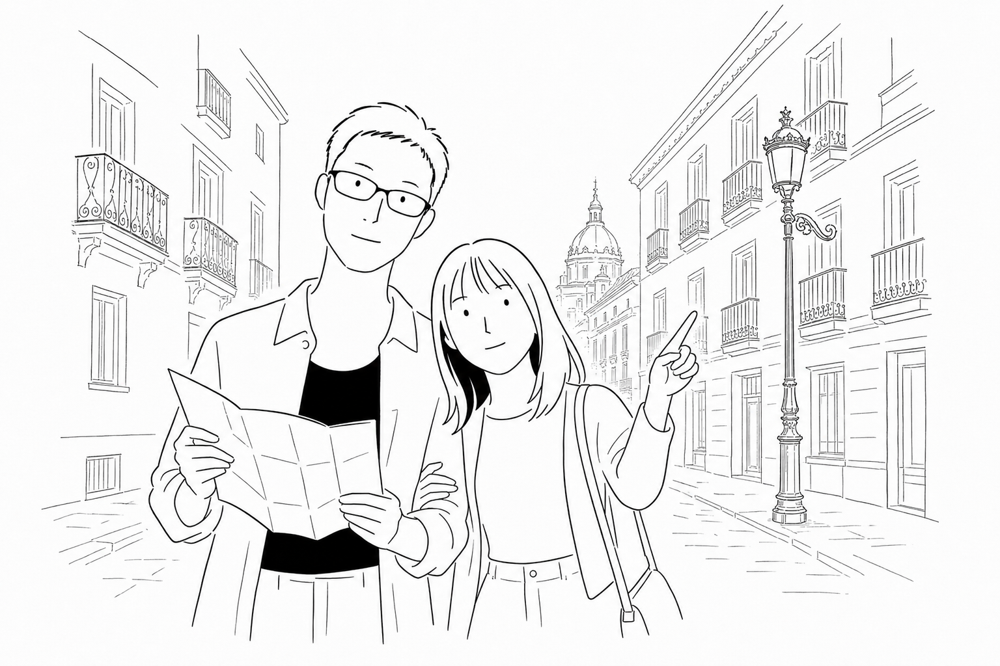
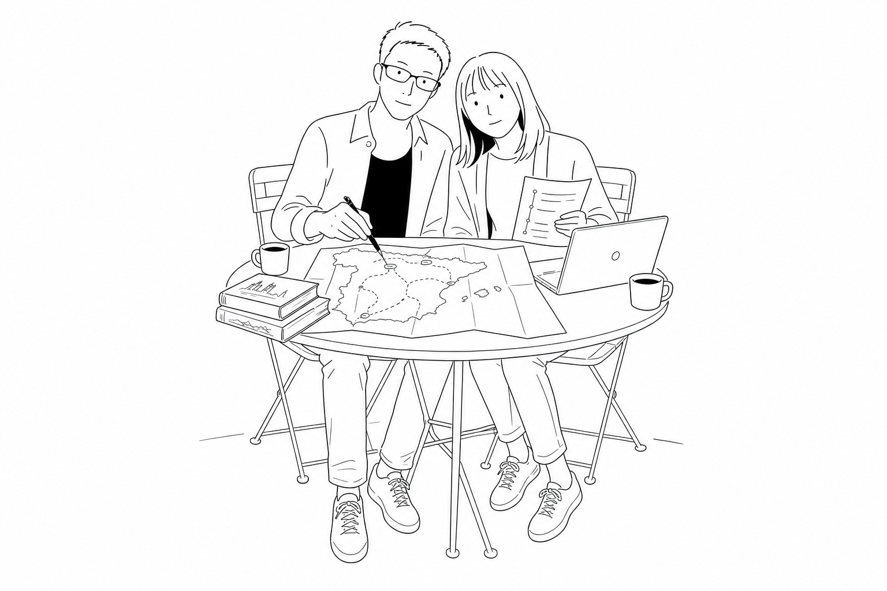
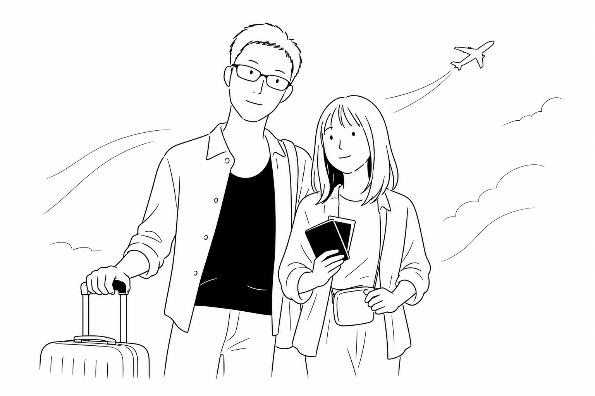
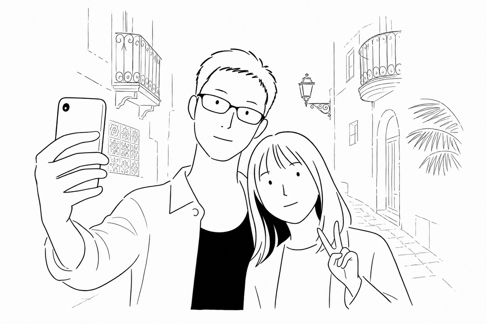
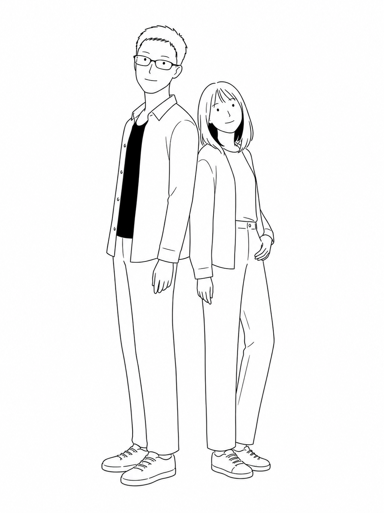

Today
旅が始まるまで

⌖Before the journey
Our First Adventure
A journey for two
私たちのスペイン旅行が、いよいよ近づいてきたね。
一緒に、最高の8日間にしよう。

Today

Upcoming
Quick Info
The best thing in life is the people we love, the places we’ve been,
and the memories we’ve made along the way. ♡
ITINERARY
移動・街歩き・食事を、一つのストーリーに。
Departure
QR809で夜の空へ。旅の始まり。
Madrid
王宮、美術館、そして夜はフラメンコ。
Flamenco
ディナーとショー。スペインらしい特別な夜。
Barcelona
AVEで移動。サグラダ・ファミリアとCinc Sentits。

Return & Stay
19:10に成田へ到着。オリエンタルホテル東京ベイで一泊して、旅の余韻を楽しむ。
FLIGHTS
搭乗日に必要な情報を、すぐ見つけられる形で。

Oct 8 · Narita
Oct 9 · Doha
Oct 14 · 16:35
Oct 15 · 19:10着
HOTELS
スペインの二都市と、帰国後の新浦安で過ごすホテル。
MADRID · OCT 9–11
BARCELONA · OCT 11–14
SHIN-URAYASU · OCT 15–16
成田到着後の一泊。新浦安駅直結。
〒279-0011 千葉県浦安市美浜1-8-2
NEARBY & ACCESS
PRIVATE NOTE
この端末に自動保存されます。
DINING
食事も、この旅の大切な思い出に。
MADRID · OCT 10 · 21:30
BARCELONA · OCT 13 · 19:00
TRAVEL CONCIERGE
旅行中に必要な予約を、種類ごとにすぐ確認。
FLIGHTS
HOTELS
DINING
TRANSPORT
予約情報が追加されるたび、このページが旅のコンシェルジュとして育ちます。
PREPARE
持ち物もメモも、この端末に自動保存されます。
Packing
準備を始めよう
追加した持ち物はここに表示されます。
SOUVENIRS
それぞれの端末に自動保存。思いついたらすぐ追加できます。
Add
まだ登録がありません。最初の一人を追加してみよう。
EMERGENCY
慌てたときに、上から順番に確認。主要情報はオフラインでも表示できます。
Spain emergency number
スペイン国内では共通の緊急番号です。
帰国日が迫っている場合は、最初の電話で日程を伝える。
MADRID
Calle Serrano 109, 28006 Madrid
人身事故などの緊急時は夜間・休日も代表番号で対応。BARCELONA
Av. Diagonal 640, 2a planta D, Barcelona
人命に関わる緊急時は夜間・休日も電話対応。My information
入力すると自動保存されます。
連絡先確認：在スペイン日本国大使館・在バルセロナ日本国総領事館（2026年7月確認）。渡航直前にも公式情報をご確認ください。
TODAY
旅の時期に合わせて自動で切り替わります。
FUN
迷ったときは、コインに任せてみよう。
Coin Flip
決めたいテーマを選んで、コインをタップ。
Tap the coin
MEMORIES
準備の日から旅の終わりまで残せる、二人だけの端末内アルバム。
Before → After
写真は自動で縮小し、この端末のブラウザ内に保存します。別端末への共有や自動同期は行いません。
Add photos
写真はこの端末だけに保存されます。
まだ写真がありません。Day 0に準備の一枚を追加して、旅の物語を始めよう。
TO YUKO
今回のスペインは、僕たちの最初の冒険。
景色も、食事も、迷った道も、全部ふたりの思い出にしよう。
Yuta
